Zachary started with the The Shuttle Puzzle or Peg Game, worked on The Tower Puzzle, infinite series, magic squares, linear graphs+.. He also told Don that he and his Dad do one problem each night from the Math Olympiad Problem book for Elementary and Middle School. The graphs below came from the Shuttle Puzzle in which he found the rule x(x+2) = y and the first parabola he graphed.
He is able to predict where the graph is going to cross the x-axis for the equations of the form x(x+k)=y. And he can tell where the vertex (low point ) is for the graphs above. Then Don asked him to write the equation if the graph crosses the x-axis at 2 and 5 . He is working on that and he was ready to tell Don, when he had to leave.
Zachary works in spurts on a problem, and comes back to it when he feels he needs to.
This was his start on the infinite series and notice his writing each partial sum as (2x-1)/2xHe knew the top number of the fraction was always 1 less than the bottom number. And he carried that idea forward.

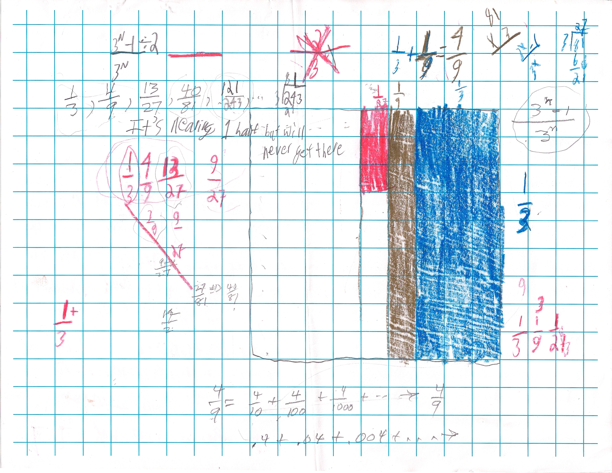
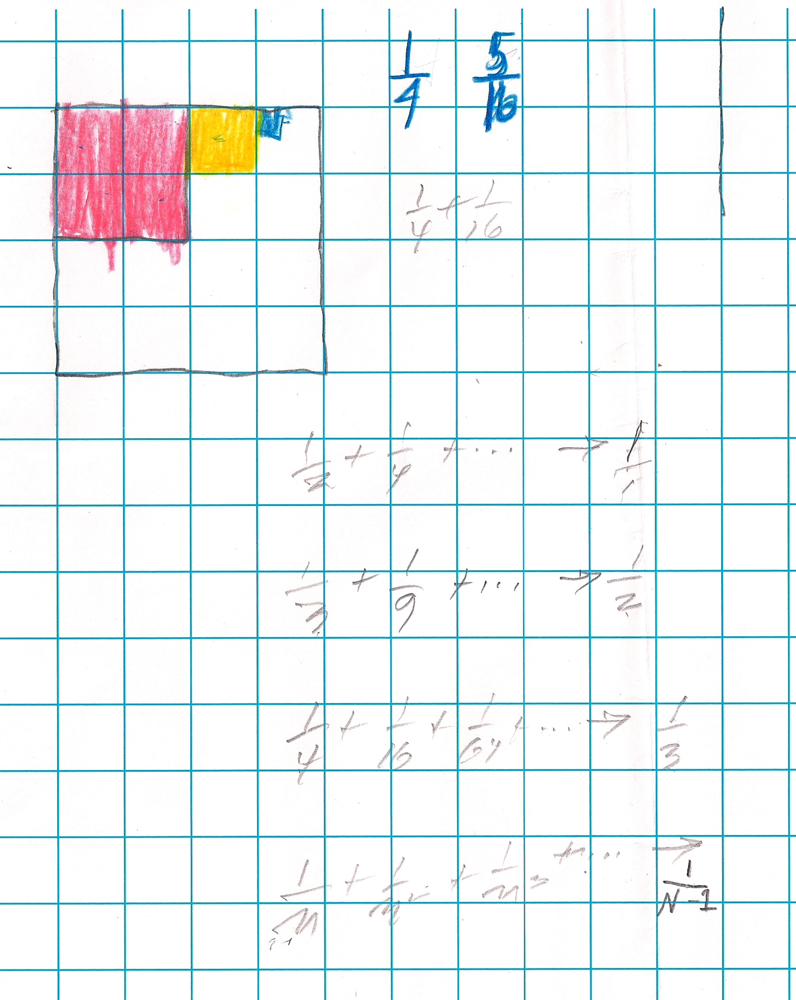
After Zachary got 1/n + (1/n)2 + (1/n)3 + .. -> 1/(n-1), Don asked Zachary to see what he gets starting with 2/5, below:

I think he had some problems with this, because his square was not a square, but 25 by 24. But doing the math, he ended up with .666... and he knew that was equal to 2/3. Don showed him how to find this in Mathematica below:
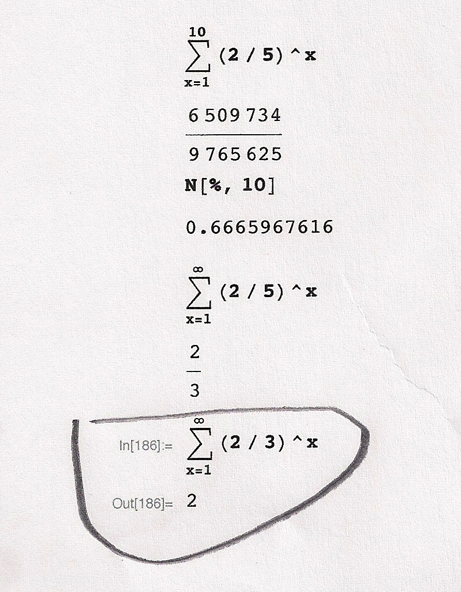
Soon after that he was able to generalize A/B + (A/B)2 + (A/B)3 + ...->A/(B-A)
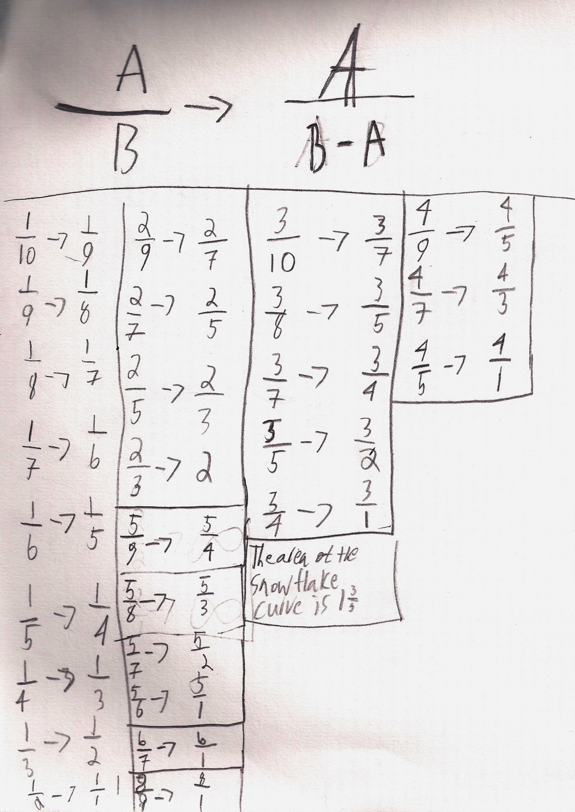
Notice Zachary has added the limit of the sequence for the snowflake area above (1 3/5).
The following pages show his work (mostly at home), to find out which number changes the slope and y-intercept.
Finding out which number changes the slope:
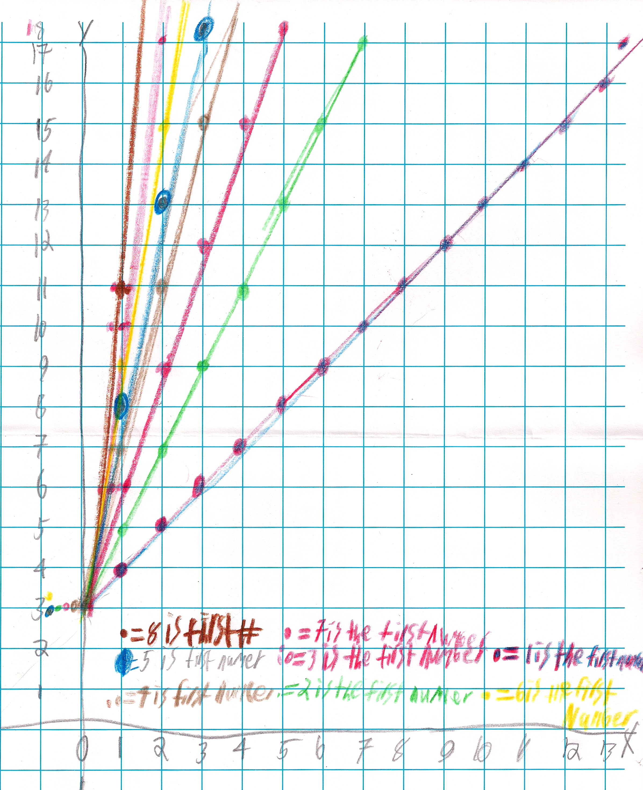
Zachary figured out that the the higher the multiplying number by x gives a higher slope, but the adding number decides the starting point. Since a line is infinite, the adding number tells where the graph crosses the y-axis and is called the y-intercept.

Getting linear equations with positive and negative fractions for slopes.
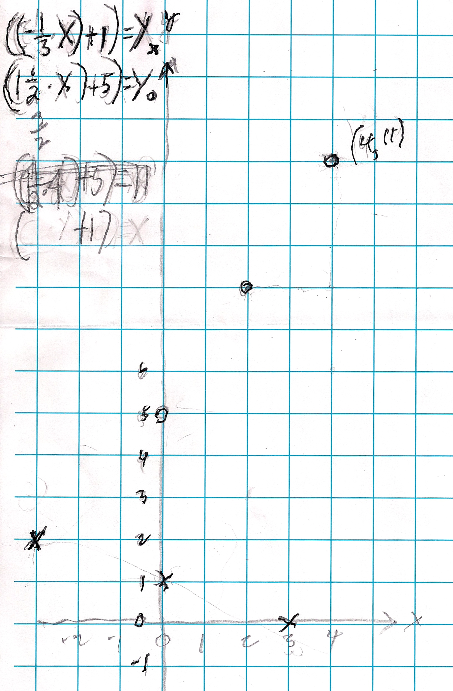
Zachary graphed the square numbers, but Don wasn't sure how Zachary thought about his writings below the graph.
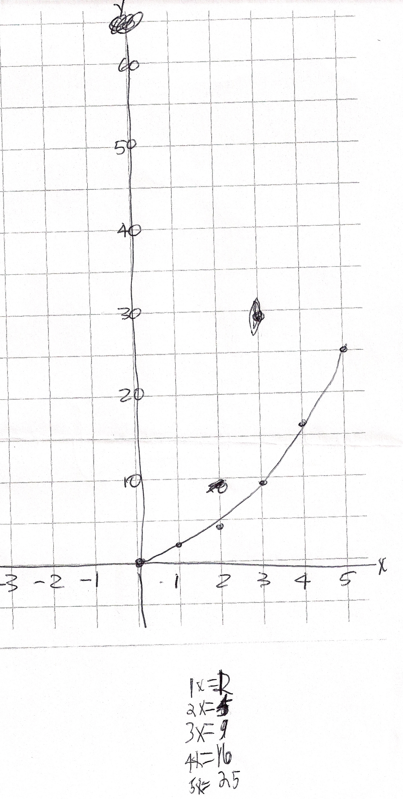
Showing linear graphs with opposite slopes.
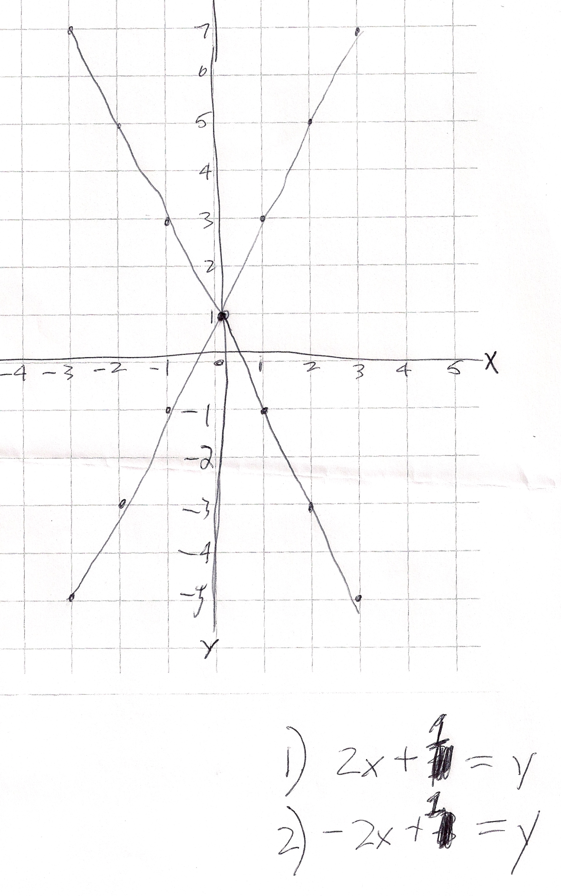
Zachary graphs an hyperbola, with positive values only for x. What happens with negative values for x?
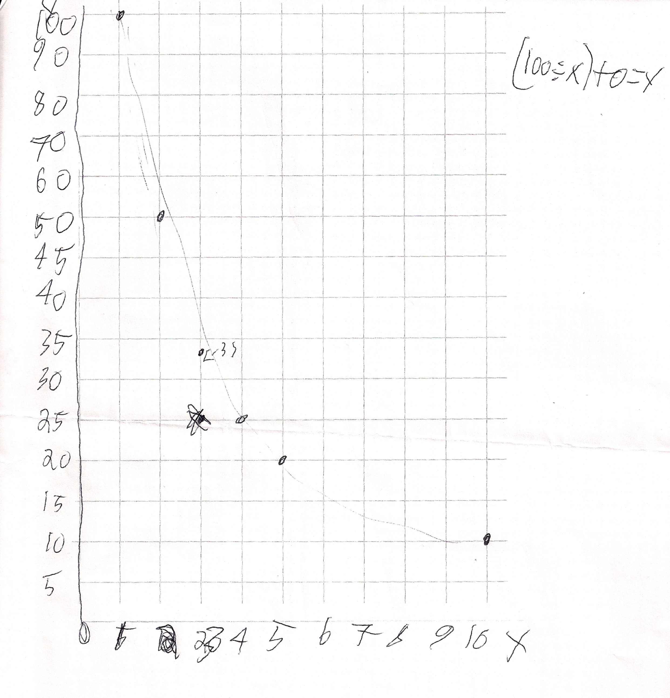
Don suggested he try to find the area of The Snowflake Curve using an infinite series.
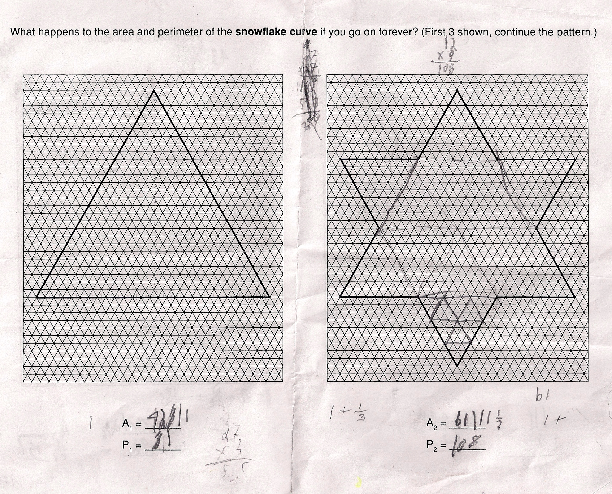
Don didn't give him any directions on how to start. As a result Zachary started getting, large numbers. Don then suggested he start with 1 as the area of the first picture, the triangle, and then suggested he look for an infinite series as he went from picture 1, then 2, etc. The figure made each time involves taking 1/3 of the distance from each corner, and adding a triangle to the original shape on each side.
He was able to do this and continued through picture 3 and 4

Now one can see simple fractions in a series 1 + 3/9 + 12/81 + 48/729
Don let him go here and when he came across factoring out the 3/9, Don helped him with that. He had done it differently than Don had seen and Don just closed his eyes and when Zachary finished, he had the correct answer: 1+3/5!
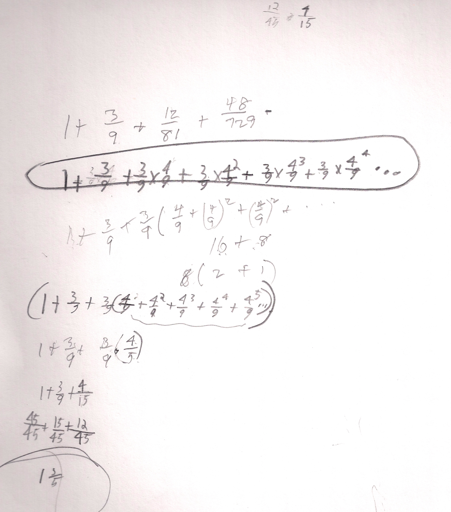
Needless to say, watching Zachary work has been exciting. To see how he went from one thing to another, how he was very persistent in his work; he stayed with things and repeated and changed when he wanted to and needed to. He is also a good tennis player and golfer and a basketball fan.
Great job, Zachary !!